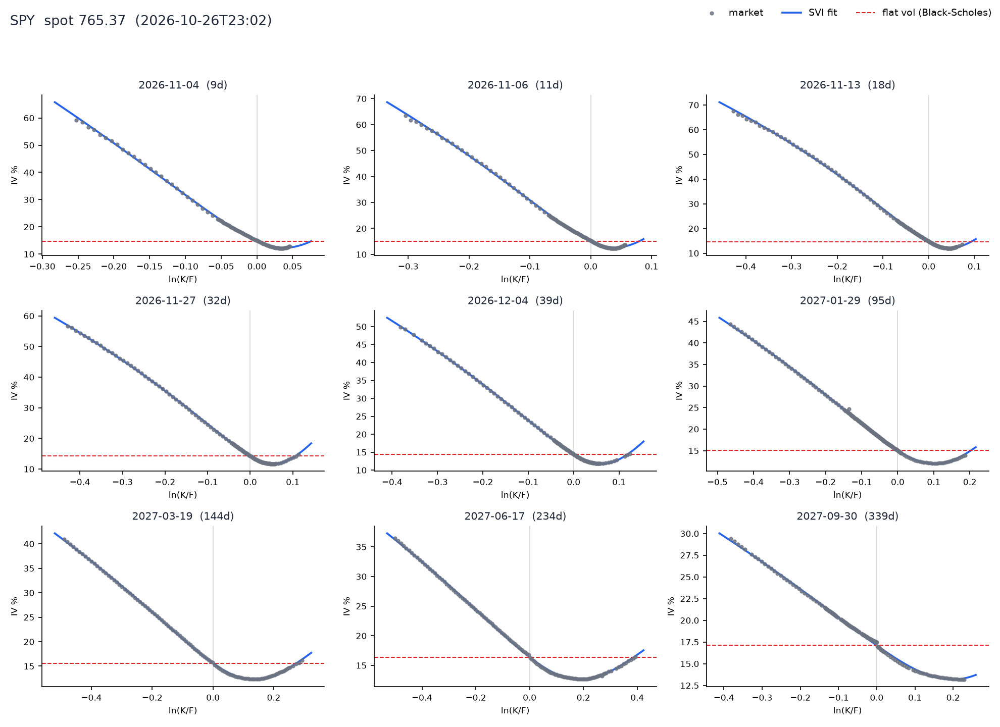
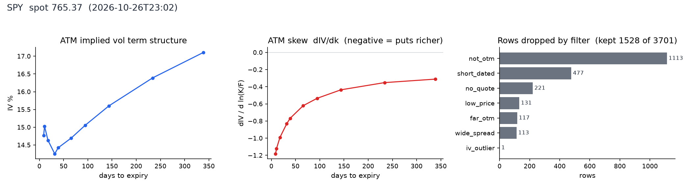
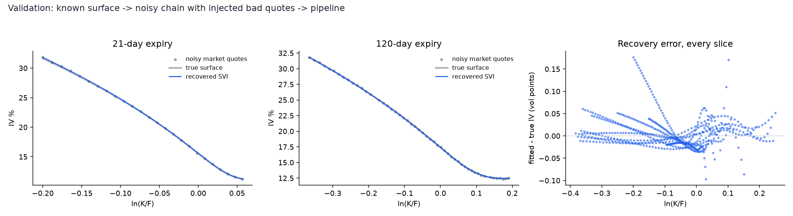
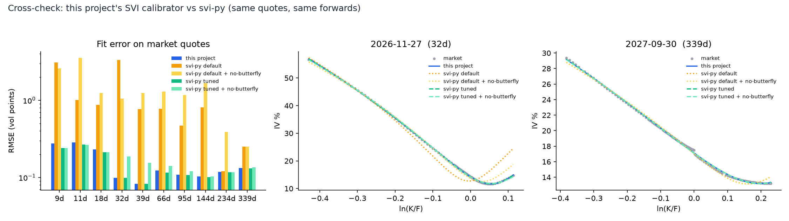

Take a real options chain, work backwards from prices to the volatility the market is pricing at every strike and expiry, fit an arbitrage-aware surface, and see the smile and skew that Black-Scholes assumes away.
Options traders quote volatility, not price. Black-Scholes assumes one volatility for every strike; the market disagrees loudly.
On 2026-10-26 the SPY at-the-money implied vol was about 14.8% at the shortest expiry and 17.1% at the longest, while far out-of-the-money puts at the front of the curve priced in as much as 59%. Index crash risk is what that skew is paying for. The red dashed line on every panel below is the flat volatility Black-Scholes would use.

Interactive. Drag to rotate, scroll to zoom. Black dots are the market quotes; the surface is the fitted SVI. Regions outside the observed strikes are masked rather than extrapolated.
The skew is steepest at short maturities and flattens with time; the term structure of at-the-money vol is upward sloping, with a bump around the first two expiries.

Five stages, each with its own module and tests.
Crossed, one-sided, wide-spread, penny and statistically odd quotes are removed. Every dropped row is kept with its reason so nothing disappears silently.
F = K + (C - P)/DF near the money, so dividends and borrow costs are read from the market instead of assumed.
Out-of-the-money options only, solved with vectorised bisection. Quotes violating static no-arbitrage bounds are rejected instead of producing nonsense vols.
Zeliade's quasi-explicit reduction turns each slice into a small linear least-squares problem, with positivity, Lee wing bounds and calendar spreads as linear constraints, plus a butterfly check and repair.
| Filter | Rows |
|---|---|
| not otm | 1,113 |
| short dated | 477 |
| no quote | 221 |
| low price | 131 |
| far otm | 117 |
| wide spread | 113 |
| iv outlier | 1 |
"Not otm" is not data loss: each strike contributes its out-of-the-money leg only, so the in-the-money twin is intentionally skipped.
| Expiry | Days | Quotes | RMSE (vol pts) | Max err (vol pts) | No butterfly arb | No calendar arb |
|---|---|---|---|---|---|---|
| 2026-11-04 | 9 | 104 | 0.277 | 1.16 | yes | yes |
| 2026-11-06 | 11 | 127 | 0.284 | 1.21 | yes | yes |
| 2026-11-13 | 18 | 146 | 0.230 | 1.07 | yes | yes |
| 2026-11-27 | 32 | 137 | 0.099 | 0.34 | yes | yes |
| 2026-12-04 | 39 | 129 | 0.082 | 0.27 | yes | yes |
| 2026-12-31 | 66 | 314 | 0.123 | 0.66 | yes | yes |
| 2027-01-29 | 95 | 180 | 0.108 | 1.04 | yes | yes |
| 2027-03-19 | 144 | 110 | 0.103 | 0.29 | yes | yes |
| 2027-06-17 | 234 | 125 | 0.118 | 0.26 | yes | yes |
| 2027-09-30 | 339 | 156 | 0.133 | 0.36 | yes | yes |
A fit that matches the market proves little if the market is noisy. So the pipeline is also run on a chain generated from a known arbitrage-free SSVI surface, with bid/ask noise, tick rounding and injected bad quotes.

Across every slice, inside the observed strikes, the recovered vols are within 0.18 vol points of the truth (RMS 0.03). This is enforced as a test, not just plotted.
An independent implementation, run on exactly the same cleaned quotes and forwards. Fit quality, butterfly and calendar checks are computed by a separate script, not by either library.

| Calibrator | Mean RMSE (vol pts) | Worst error (vol pts) | Slices w/ butterfly arb | Calendar violations | Curve gap vs mine (vol pts) |
|---|---|---|---|---|---|
| this project | 0.16 | 1.21 | 0 | 0 | 0.00 |
| svi-py default | 1.15 | 9.80 | 6 | 45 | 1.04 |
| svi-py default + no-butterfly | 1.45 | 8.37 | 0 | 23 | 1.27 |
| svi-py tuned | 0.15 | 1.04 | 0 | 1 | 0.06 |
| svi-py tuned + no-butterfly | 0.17 | 1.02 | 0 | 0 | 0.11 |
implied_vol objective with multi-start, it reaches 0.15, essentially level with this project's 0.16, and the fitted curves agree to about a tenth of a vol point. Two independent calibrators converging is the real result. The differences are that this one enforces calendar spreads by construction, and that it is about 15–20× faster than svi-py's tuned configuration (roughly 0.09 s versus 1.5–2 s per slice); svi-py's untuned default is faster still (about 0.01 s) but is the inaccurate one.pip install -e ".[dev]" python -m ivsurface SPY # live chain from Yahoo Finance python -m ivsurface --synthetic # offline, known ground truth pytest # 13 tests
SPY options are American-style but priced here with Black-76. Using only out-of-the-money options limits the error, but a European index such as ^SPX is the clean choice.
Free Yahoo data is delayed; this snapshot was taken after the close. The discount rate is a flat constant used only for discounting.
Arbitrage checks cover the observed strike range plus a small margin. Beyond it the surface is extrapolation, and is masked in the 3D view.